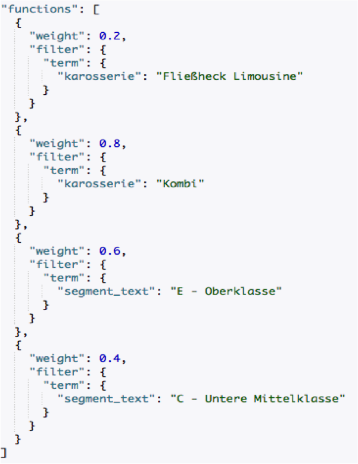

Stefan Otte
Stefan Otte
– Kurt Lewin
"The key idea behind active learning is that a machine learning algorithm can achieve greater accuracy with fewer training labels if it is allowed to choose the data from which it learns.
An active learner may pose queries, usually in the form of unlabeled data instances to be labeled by an oracle (e.g., a human annotator).
Active learning is well-motivated in many modern machine learning problems, where unlabeled data may be abundant or easily obtained, but labels are difficult, time-consuming, or expensive to obtain."
– Burr Settles, Active Learning Literature Survey
greater accuracy with fewer training labels
→ "good dataTM"
actively query for data
→ sequential decision making
Problem statement
\[y \sim P(y; \theta_i)\]
Goal: Find a policy that \[\max \sum_{t=1}^T y_t\]
past performance + exploration bonus
Play each bandit once
Then play bandit that \[\Large \arg\max_i \; \bar\mu_i + \sqrt{\frac{2\ln n}{n_i}}\]

Active Learning or: How I Learned to Stop Worrying and Love Small Data
Questions?
Stefan Otte